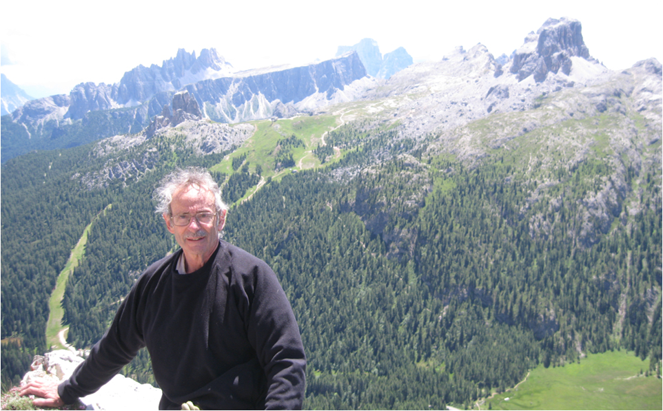
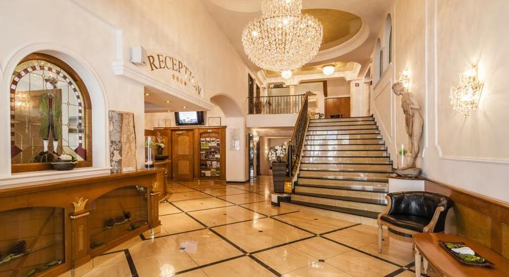
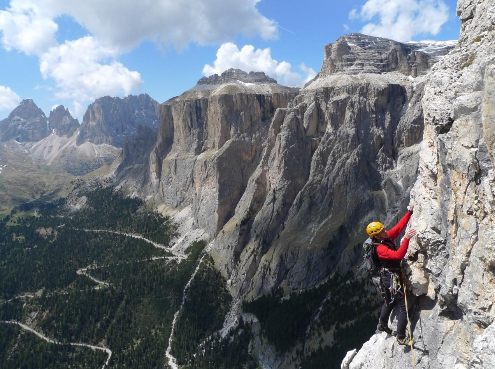
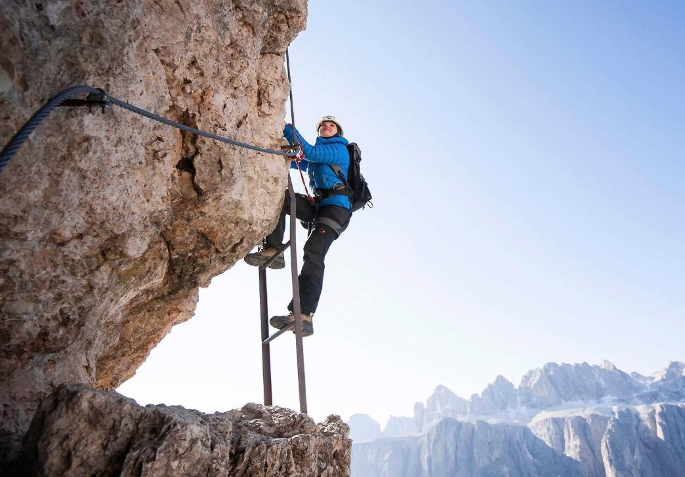
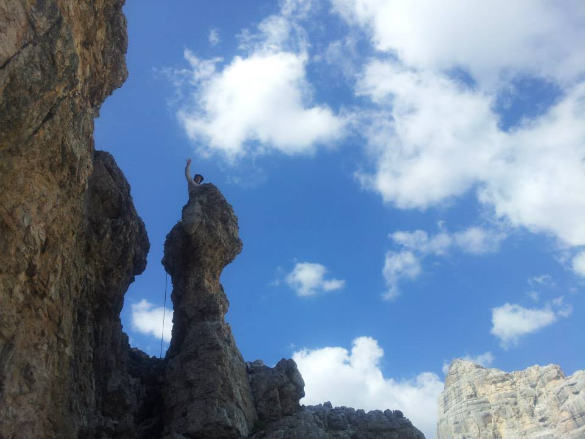

Welcome to ASIC 2016
The Fifteenth Annual Summer Interdisciplinary Conference, held at Hotel Oswald in Selva, Val Gardena, Italy, July 3–8, 2016.
The dates were chosen to reduce conflicts with the 2016 annual meetings of the Cognitive Science Society and the Mathematical Psychology Society, held in Philadelphia later in the summer.

ASIC organizer, Rich Shiffrin, atop Torre Grande, near Cortina
Hotel Oswald is a highly rated hotel with an excellent restaurant (hoteloswald.com/en). The meetings and catered breaks are held in a city conference room adjacent to the hotel, with lodging and dining at Hotel Oswald.
Possibly the most highly rated previous ASIC conference was held in 2013 in the adjacent valley to the east, in Cortina d'Ampezzo, and this year's site was chosen in an attempt to replicate that experience without repeating a prior site. The entire area is outstanding in every respect and has been a UNESCO World Natural Heritage site since 2009.
Travel to Selva is fairly easy from major airports at Venice, Milan, and Innsbruck, among others, by rental car or bus. Selva is surrounded by Dolomite mountain groups, many with lifts that operate in summer and bring visitors high into the mountains to hiking trails, biking trails, climbing areas, rifugios, and via ferrata.
Richard M. Shiffrin of Indiana University – Bloomington is the organizer: email correspondence should be directed to shiffrin@indiana.edu.
About the conference
The subject matter of the ASIC conferences is interdisciplinary, within the broad frame of Cognitive Science. ASIC uses the very successful format of previous ASIC and AIC conferences: days are free for leisure activities and discussions among participants. The talks are in the later afternoon/early evening, followed by dinner. The date has been chosen to make it convenient for attendees to bring family/friends.
Invitation
The conference is open to all interested parties, and their family and friends. An invitation is NOT needed to attend. However, due to the small number of spots for speakers, the organizer will select the attendees to give talks, and choose the lengths of talks.
Conference aims
The conference covers a wide range of subjects in cognitive science, including: modeling of cognition; neuroscience and cognitive neuroscience; psychology (perception, psychophysics, attention, information processing, memory and cognition); computer science and artificial intelligence; machine intelligence and learning; methodology and statistics; linguistics, psycholinguistics and computational linguistics; and philosophy of mind and cognitive science. We especially invite talks emphasizing theory, mathematical modeling, and computational modeling.
Conference format
There is a single speaking session each day, intentionally organized to maximize the dissimilarity of each day's presentations. If the number of participants exceeds the number of speaking slots (about 42), the organizer will select some talks to be of shorter duration, and if necessary choose the speakers who will present.
The conference starts with registration and a reception with wine, beer, drinks and food from about 15:30–16:15 on Sunday, July 3. On subsequent days there are drinks and light snacks from ~15:45–16:15, followed by a session of about seven spoken presentations that include a mid-session drink break. The last evening of talks is Friday, July 8, so plan to depart no earlier than Saturday, July 9.
Useful websites: hoteloswald.com/en, valgardena.it/en, val-gardena.com/en.
Schedule & Talks
Talk order each day was determined by the session chair. Total time for talk, questions, setup, and interruptions: 25 minutes.
Food and drink were available about 20 minutes prior to each session start, at the conference venue behind Hotel Oswald (across the bridge over the creek).
Sunday, July 3, 4:00pm — Oberauer, Chair
- Oberauer — Does rehearsal help immediate serial recall?
- Walasek — Income inequality and positional consumption online
- Sanborn — People are normative some of the time: Mixing combination rules
- Regenwetter — The construct-behavior gap in behavioral decision research
- Huber — Episodic memory and spatial navigation in the MTL
- Sperling — Attention filters for features. New results
- Anders — Merging regression with sequential sampling models
- Cowell — Computational model of perceptual deficits in MTL amnesia
- Franconeri — Visual exploration and communication of patterns in data
Monday, July 4, 4:00pm — Dunn, Chair
- Dunn — Testing models of reasoning with signed difference analysis
- van Ravenzwaaij — The EZ Diffusion Model: A powerful test of empirical effects
- French — A new fading-Gaussian activation-based model of interval-timing
- Landy — Systematic structure in ignorance and political misinformation
- Gorea — Confidence levels during perception are discrete not continuous
- Guest — What the success of brain imaging implies about the neural code
- Halpern — Constrained optimization: Modeling selection in categorization
- Holden — Intentional control of cognitive dynamics
- Holmes — New approach for modeling decisions about changing information
Tuesday, July 5, 4:00pm — Donkin, Chair
- Donkin — Exploring Bayesian decision rules in visual working memory
- Ziegler — Modeling and predicting individual dyslexia patterns
- McNamara — Individual differences in cue combination during navigation
- Lewandowsky — Quantitative constraints on intergenerational social discount rate
- Malmberg — Toward a model of the problem of autobiographical memory
- Matzke — Avoid shortcuts in modeling hierarchical data
- Melcher — Temporal windows and perceptual cycles organize vision
- Stoianov — The perceptual code in reading: explaining spatial variance
- Talmi — Modeling the list composition effect on emotional memory
Wednesday, July 6, 4:00pm — Love, Chair
- Love — Coherency maximizing exploration in the supermarket
- Shiffrin — Learning during short-term scanning
- Musca — Does word frequency explain free recall?
- Brown — A rank-based approach to preferences and judgments
- Palmeri — Modeling Perceptual Expertise
- Kouider — Consciousness and predictive coding in the infant brain
- Pauli — Of cognitive models in ancient, subcortical brain structures
- Pecher — Grasp compatibility effects
- Rehder — Beyond Markov: The Beta-Q model of causal reasoning
Thursday, July 7, 4:00pm — Sloutsky, Chair
- Sloutsky — The development of categorization
- Bhatia — Modeling associative judgments with vector space semantics
- Trueblood — When are causal representations quantum versus classical?
- Cheng — Causal invariance aspiration shapes our causal representations
- McLaughlin — Modeling feedback response to in verbal rule-based categorization
- Mullett — Attention and behavioral phenomena in choice models
- Simen — Robust time scale invariance in timing and perceptual decisions
- Speekenbrink — Exploration and exploitation in contextual multi-armed bandits
- Steil — Scaling exploratory robot learning from motor to social learning
Friday, July 8, 4:00pm — Yearsley, Chair
- Yearsley — Quantum and classical models of causal political judgments
- Jones — Logical incoherence of game-theoretic rationality
- Pezzulo — Multi-attribute choices: inter-temporal and effort-based decisions
- Ramscar — Neuropsychological tests exaggerate "healthy cognitive decline"
- Averbeck — Markov decision processes and exploration-exploitation
- Testolin — Letter perception emerges using deep neural networks
- Trcek — Attributing 'trust' to specific parts of the nervous system
- Usher — Selective-integration: accounting for decoy effects
- Zorzi — Attention and spatial processing in normal and damaged brains
Registration
If you are planning to attend ASIC 2016, fill out the registration form and submit your registration fee.
This fee pays for rental of the conference room, conference equipment rentals, catering costs for snacks and drinks at conference breaks and receptions, and several other miscellaneous costs.
Fee schedule (US dollars)
| Timing | To Indiana Conference Bureau |
|---|---|
| Prior to January 1, 2016 | $275 |
| January 1 – March 1, 2016 | $325 |
| After March 1, 2016 | $375 |
In addition to the registration fee per person, you may purchase additional guest vouchers for other persons attending the receptions and breaks ($20 per day).
Lodging
A block of rooms is held at Hotel Oswald, Selva, Val Gardena, Italy — an excellent hotel with high ratings, spa facilities, and an outstanding restaurant.

Hotel website: hoteloswald.com/en. Lodging rates include breakfast and dinner for each person each day. Reservations should be made early, starting in fall 2015.
Rates
- One person/single room (only six single rooms available): €102/day
- One person in double room: €142/day
- Two persons in a double room: €84/person/day
- Two persons in family suite (2 bedrooms, 2 baths): €102/person/day
- Three persons in family suite: €94/person/day
There are a variety of discounted prices for children of various ages; contact the hotel directly to determine pricing for your family situation.
Deposit
30% of total charges at time of booking, until June 1. 70% from June 1 to June 28. 100% after June 28.
Cancellation
A full refund (minus a small handling fee) is made if cancellation occurs prior to May 1. After May 1, until June 1, the 30% fee is nonrefundable. After June 1, the hotel requires 70% of total charges (non-refundable if cancelled). After June 28, the hotel requires 100% of total charges (non-refundable if cancelled).
Reservations
Send an email indicating you are about to reserve, and you will receive a conference password. Book by calling the hotel with the password (they will ask for the appropriate deposit), or send a deposit by bank transfer to Raiffeisenkasse Selva Val Gardena, Italy, Hotel Oswald — IBAN: IT 82 Y 0823858890000300002674, Swift-Bic: RZSBIT21055. You can also book using the hotel's online service.
Parking & internet
Parking is €5/day. Wireless internet is free in public areas and guest rooms.
Address & telephone
HOTEL OSWALD****
Via Meisules 140, I-39048 Selva Val Gardena
Tel: +39 0471 795151 · Fax: +39 0471 794131
Email: info@hoteloswald.com
Meals, Dining & Breaks
A generous breakfast buffet and four-course dinner at Hotel Oswald are included in the lodging price.
A catered reception starts each conference proceeding at about 15:45, with drinks and finger food, next to the hotel in the city conference center. The registration fee pays for the food and drink at these conference reception/breaks.
Breakfast is served each day from 7:30 to 10:00. Dinner takes place after the conference talks end, about 20:15–20:30, with offerings that change daily and include vegetarian choices.
Travel
Travel to and around Val Gardena.
It is a good idea to explore the area with Google Maps and Google Earth. Several websites provide information about air, train, car, and bus services, e.g. val-gardena.com/en/how-to-get-there.
By plane
The main international airports giving the best access to Val Gardena and Selva are Venice, Italy (about three hours driving), and Innsbruck, Austria (about two hours driving). There are smaller, closer airports, but not usually with international flights.
By car
From Innsbruck: A13 and A22 south over Brennero Pass, SS12 to SP82 to SS242d to SS242 (~2 hrs). From Venice: A27 to SS51 to SP251 to SR48 to SS244 to SS243 (about 3 hrs).
By train and bus
A variety of connections are available from the north or south. There are many local buses in Val Gardena.
Activities
The Val Gardena area offers the variety of activities, spectacular scenery, and nature that was present for ASIC 2013 in Cortina d'Ampezzo.
Activities include hiking, biking, via ferrata, rock climbing, and parasailing, with easy and convenient accessibility from roads, lifts, and rifugios.
Area & Dolomite mountain groups
Immediately adjacent to Selva, to the south, are the Sassalungo, Langkofel, and Sella dolomite groups. Also close, just to the north, is the Odle group. Northeast is Stevia, southeast is Piz Boe. Heading east 32 km (toward Cortina) is Lagazuoi. South 35 km is the Rosengarten/Catinaccio group (with the Vajolet Towers).
Lifts and cable cars
There are about 12 lifts and cable cars in Val Gardena open in the summer, giving convenient access to dramatic hiking trails, climbing possibilities, biking trails, via ferrata, and views. A three-day adult pass is 60 euros; a six-day pass is 79 euros (children's passes reduced by age).
Hiking

There are hundreds, possibly thousands, of hiking paths and trails throughout Val Gardena, well maintained and marked by number, varying in length, difficulty, vertical gain and loss, and access, connecting the many rifugios and often including peaks and dramatic viewpoints.
Via Ferrata

Via Ferrata are protected hiking paths in the dramatic heights, cliffs, and spires of the Dolomites — the hiker uses a harness, slings and carabiners to attach to cables affixed to the cliffsides. They range from easy to difficult, graded on technical difficulty (I–5) and seriousness (A–C). We anticipate that one of the two conference climbing guides will lead a group at least once on an especially noteworthy via ferrata.
Rock climbing
We arrange at least one and likely two "group" climbing days that allow beginners, novices, and children to try rock climbing, at Sella Pass, an incredibly dramatic and pleasant site with many easy and moderate climbs peppered with large boulders and bolted routes, surrounded by Sassolungo and the Sella group. The first group climbing day is scheduled for Monday, July 4. There are several climbing guide centers in Selva, one directly across the street from Hotel Oswald.
Mountaineering
The many peaks in Val Gardena allow a variety of mountaineering ascents, though the extremely large vertical relief from a low starting elevation generally entails a very long day — best planned for days prior to or after the conference.
Canyoning
Suitable for beginners with no experience but exciting and enjoyable: wear a wetsuit, enter a stream in a narrow canyon high in the dolomites, and descend by walking, scrambling, floating, and sliding, with the guide lowering clients by rope where cliffs are encountered.
Parasailing
Tandem paragliding provides an exciting and exhilarating experience with an expert guide, with the additional benefit of extraordinary Dolomite scenery. There are something like 45 Via Ferrata accessible for day tours from Selva, covering the full range of lengths and difficulties.
Contact
Email is preferred for all correspondence.

Richard Shiffrin at ASIC 2013 near Cortina d'Ampezzo, Italy
Conference organizer
Rich Shiffrin
Indiana University – Bloomington
shiffrin@indiana.edu
Tel: 812-855-4972 · Fax: 812-855-9871
Webmaster / Conference Coordinator
Ruth Eberle
Phone: (812) 856-5722
reberle@indiana.edu
Patrick Craig
Phone: (812) 856-6037
pjcraig@indiana.edu
Postal address
Annual Summer Interdisciplinary Conference (ASIC 2016)
c/o Prof. Richard Shiffrin, Psychological and Brain Sciences Department
Indiana University, 1101 E. 10th St., Bloomington, IN 47405